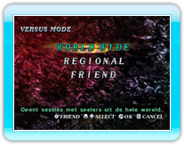
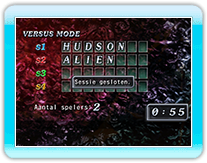
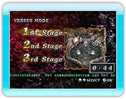
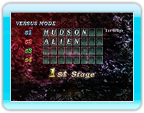
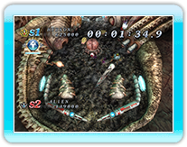
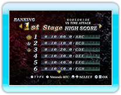

14 |
VERSUS MODE |
 |
|
In dit speltype kun je het opnemen tegen verre spelers via Nintendo Wi-Fi Connection. Door simpelweg dit speltype te kiezen wordt je automatisch verbonden met Nintendo Wi-Fi Connection.

● WORLD WIDE ● REGIONAL
● FRIEND
Als je het groepstype gekozen hebt waar je mee wilt spelen, wordt de
sessie geopend voor deelnemers. Als niemand meedoet wordt het spel geannuleerd en de verbinding verbroken. Terwijl je wacht op deelnemers kun je terugkeren naar het Modus-scherm door op
Zodra er genoeg spelers zijn, bepalen de spelers het level (de meeste stemmen gelden).
* Als er een evenveel stemmen zijn, zal de regel voor de sessie willekeurig worden bepaald. * Je kunt geen levels met eindtegenstanders selecteren.
Zodra het level is gekozen, begint het spel. Wanneer je het spel uitspeelt, kun je je huidige plaats in het klassement zien.
Deze modus is in Time Attack. Speel tot één van de spelers een bepaald aantal punten haalt. (10 Million)
Het resultatenscherm noteert je top 30 scores. Als je een topscore haalt door het opgenomen te hebben met een andere speler via Nintendo WFC, kun je die score registreren in de Nintendo Wi-Fi Connection Ranking. Wanneer je score is geregistreerd kun je jouw positie, alsmede die van 30 andere spelers rond jouw positie, bekijken.
|
 |
 |
 |